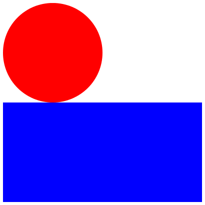

1.3 Piirtotyökaluja
Peruslaskutoimitukset sisältyvät Racket-kieleen. Kuvioiden piirtämiseen tarvitaan kuitenkin erillinen kirjasto. Kirjoita DrRacketin määrittelyikkunaan seuraava koodirivi ja paina "run" niin saat kirjaston sisältämät funktiot käyttöösi.
Määrittelyikkuna on DrRacket:issä joko ylhäällä tai vasemmalla riippuen siitä käytetäänkö Vertical vai Horizontal layout:ia. Ikkunoiden asettelun voi muuttaa valikosta View->Use Horizontal layout. Määrittelyikkuna on WeScheme:ssä aina vasemmalla.
(require 2htdp/image)
Huom! Jos käytät WeScheme-sivustoa jätä tämä rivi pois koodistasi (kuvien piirtofunktiot on sisäänrakennettuna WeScheme:een).
1.3.1 Peruskuviot
1.3.1.1 Ympyrä
Kirjoita seuraava rivi DrRacketin interaktioikkunaan ja paina <enter>. Kokeile muuttaa ympyrän kokoa ja väriä.
(circle 50 "solid" "red")
1.3.1.2 Suorakulmio
Suorakulmion piirtämiseen tarvitaan yksi argumentti lisää. Kokeile vaihtaa "solid":in tilalle "outline".
Interaktioikkunassa edellisen koodirivin voi palauttaa muokattavaksi painamalla Ctrl + nuoli ylös. Näin pääset kokeilemaan miten eri argumentit vaikuttavat funktion paluuarvoon.
(rectangle 200 100 "solid" "blue")
1.3.1.3 Kolmio
Löydät lisää piirtofunktioita täältä: http://racket.koodiaapinen.fi/manuaali/2htdp_image.html
(triangle 100 "solid" "yellow")
1.3.1.4 Tähti
(star 75 "solid" "green")

1.3.2 Nimeäminen
Interaktioikkunassa kokeilemasi koodi ei tallennu tiedostoon. Siksi se kannattaa kirjoittaa DrRacketin toiseen ikkunaan eli määrittelyikkunaan (definitions window). Määrittelyillä annetaan nimiä koodinpätkille, jotta niitä voidaan uudelleenkäyttää myöhemmin. Anna nyt piirtämillesi ympyrälle nimi "YMPYRÄ" kirjoittamalla seuraava koodi määrittelyikkunaan ja painamalal "run":
Määrittelyikkuna on DrRacket:issä joko ylhäällä tai vasemmalla riippuen siitä käytetäänkö Vertical vai Horizontal layout:ia. Ikkunoiden asettelun voi muuttaa valikosta View->Use Horizontal layout. Määrittelyikkuna on WeScheme:ssä aina vasemmalla.
Tee sama suorakulmiolle:
Huomaa, että vaikka painat "run" interaktioikkunaan ei ilmesty mitään. YMPYRÄ ja SUORAKULMIO ovat silti olemassa ja voit testata niitä interaktioikkunassa kirjoittamalla YMPYRÄ ja painamalla <enter>.
1.3.3 Kuvioiden yhdistely
1.3.3.1 Kuvien asettelu päällekkäin
Voit yhdistää määrittelemäsi ympyrän ja suorakulmion samaan kuvaan kirjoittamalla seuraavan koodin DrRacket:in määrittelyikkunaan ja painamalla "run": Huom! Ensimmäisenä annettu kuva tulee päällimmäiseksi.
(overlay YMPYRÄ SUORAKULMIO)
1.3.3.2 Kuvien asettelu vapaasti
Overlay asettaa kuvat päällekkäin niiden keskipisteen kohdalta. Jos haluat siirtää kuvia toistensa suhteen, käytä overlay/xy funktiota, jonka avulla voi määritellä kuinka monta pikseliä alempaa kuvaa siirretään x- ja y-akselien suunnassa:
(overlay/xy YMPYRÄ 0 0 SUORAKULMIO)
Tässä esimerkissä suorakulmiota on siirretty 100 pikseliä vasemmalle (x-akselin suunnassa):
(overlay/xy YMPYRÄ 100 0 SUORAKULMIO)
Tässä esimerkissä suorakulmiota on siirretty 100 pikseliä alas (y-akselin suunnassa):
(overlay/xy YMPYRÄ 0 100 SUORAKULMIO)

Kokeile mitä tapahtuu negatiivisilla luvuilla.